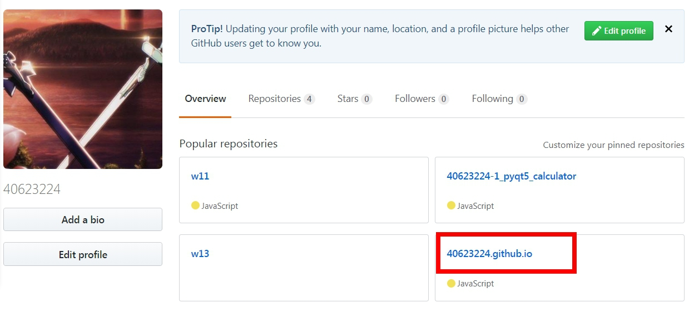
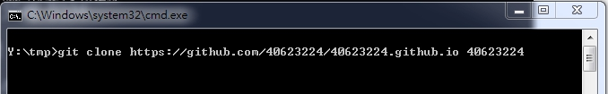
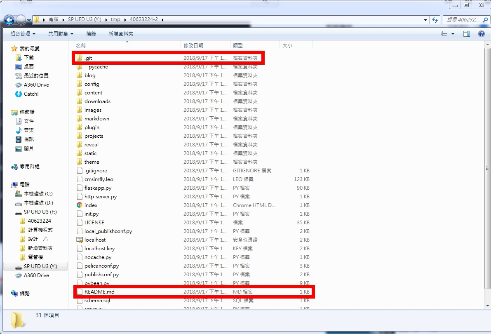
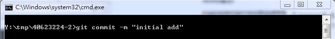
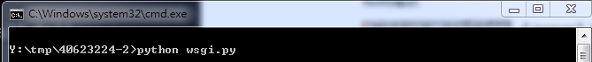
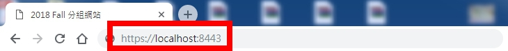
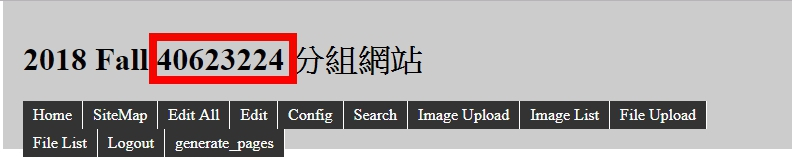

Week1
step1:建立一個新的倉庫,名字為自己的學號.github.io,權限設為公開

step2:克隆新的倉庫的網址,資料夾名字取為40623224,按Enter
git clone https://github.com/40623224/40623224.github.io 40623224

step3:除了.git和README.md不能複製,其餘都複製在自己的資料夾

step4:先看自己的狀態然後增加,再提交,推送的名稱為initial add



step5:設定自己提交的email和名字

step6:開啟進端https://localhost:8443進去修改40623224



step7:在重複step4的步驟,在git push上傳

完成gif圖:

Q&A:
Q:什麼是Onshape?
A:Onshape是一個現代化的CAD系統，可以消除設計僵局，幫助工程師做最好的工作。Onshape將高級建模工具和設計數據管理結合在一個安全的雲工作空間中，該工作空間已迅速成為全球數千家公司的主要CAD系統。
Q:為什麼選擇Onshape?
A:因為Onshape可以主動幫助我們並保護我們的知識產權，而它有七種不同的安全措施(即密碼保護訪問、雙因素認證、數據庫備份程序、專用服務器、通信安全、加密、第三方測試)。
影片:
心得:第一週開始重新接觸github有點害怕，但是聽老師解說之後其實只是沿用上學期學過的東西，所以我覺得應該是撐得住，但是這學期還多加了一個名叫''Onshape''這套軟件，因為從來沒接觸過所以還是有點害怕，但是聽到老師引用把餐廳的食物(Onshape)吃下去，甚至做得更好吃(學習)，讓我覺得反而不可怕了。
組員操作影片 << Previous Next >> Week2